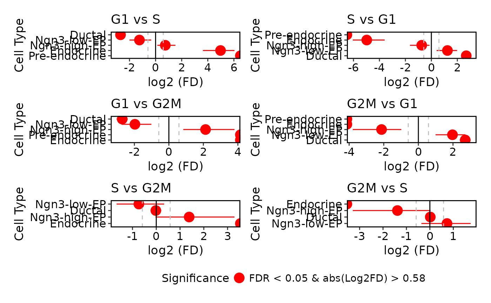
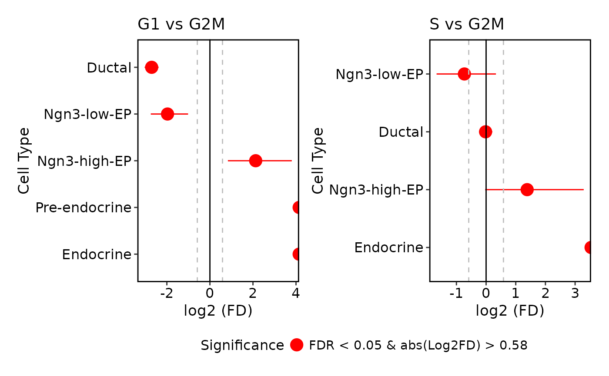
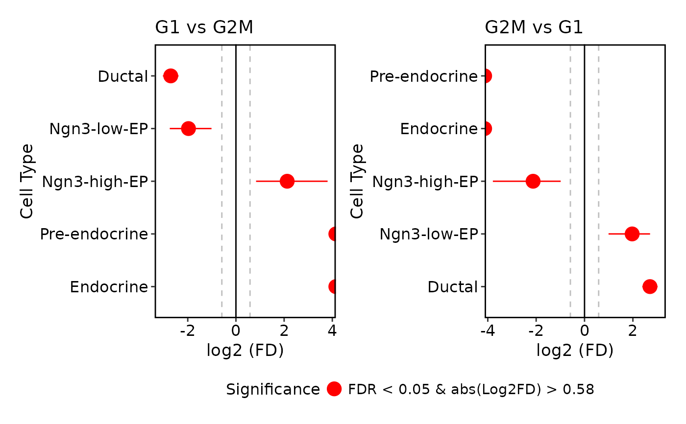
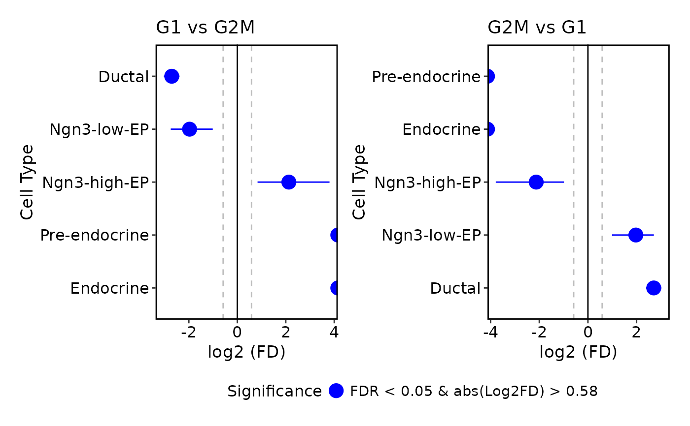

Generate proportion test plots based on the results from RunProportionTest.
Usage
ProportionTestPlot(
srt,
comparison = NULL,
FDR_threshold = 0.05,
log2FD_threshold = log2(1.5),
order_by = c("value", "name"),
pt.size = 1,
pt.alpha = 1,
cols.sig = "red",
cols.ns = "grey",
aspect.ratio = NULL,
xlab = "Cell Type",
ylab = "log2 (FD)",
theme_use = "theme_scop",
theme_args = list(),
legend.position = "bottom",
legend.direction = "vertical",
legend.title = "Significance",
combine = TRUE,
nrow = NULL,
ncol = NULL,
byrow = TRUE
)Arguments
- srt
A Seurat object containing proportion test results.
- comparison
A character string specifying which comparison to plot. If NULL, plots all comparisons.
- FDR_threshold
FDR value cutoff for significance.
- log2FD_threshold
Absolute value of log2FD cutoff for significance.
- order_by
Method to order clusters. Options: "name" (alphabetical), "value" (by log2FD value).
- pt.size
The size of the points. Default is
1.- pt.alpha
The transparency of the data points. Default is
1.- cols.sig
Color for significant points and confidence intervals.
- cols.ns
Color for non-significant points and confidence intervals.
- aspect.ratio
Aspect ratio of the panel.
- xlab
A character string specifying the x-axis label. Default is
"Cell Type".- ylab
A character string specifying the y-axis label. Default is
"log2 (FD)".- theme_use
Theme used. Can be a character string or a theme function. Default is
"theme_scop".- theme_args
Other arguments passed to the
theme_use. Default islist().- legend.position
The position of legends, one of
"none","left","right","bottom","top". Default is"bottom".- legend.direction
The direction of the legend in the plot. Can be one of
"vertical"or"horizontal".- legend.title
Title of the legend.
- combine
Combine plots into a single
patchworkobject. IfFALSE, return a list of ggplot objects.- nrow
Number of rows in the combined plot. Default is
NULL, which means determined automatically based on the number of plots.- ncol
Number of columns in the combined plot. Default is
NULL, which means determined automatically based on the number of plots.- byrow
Whether to arrange the plots by row in the combined plot. Default is
TRUE.
Examples
data(pancreas_sub)
pancreas_sub <- RunProportionTest(
pancreas_sub,
group.by = "CellType",
split.by = "Phase"
)
#> ℹ [2026-01-30 16:53:22] Start proportion test
#> ℹ [2026-01-30 16:53:22] Running comparison: "G1" vs "S"
#> ℹ [2026-01-30 16:53:29] Running comparison: "S" vs "G1"
#> ℹ [2026-01-30 16:53:36] Running comparison: "G1" vs "G2M"
#> ℹ [2026-01-30 16:53:43] Running comparison: "G2M" vs "G1"
#> ℹ [2026-01-30 16:53:50] Running comparison: "S" vs "G1"
#> ℹ [2026-01-30 16:53:57] Running comparison: "G1" vs "S"
#> ℹ [2026-01-30 16:54:04] Running comparison: "S" vs "G2M"
#> ℹ [2026-01-30 16:54:11] Running comparison: "G2M" vs "S"
#> ℹ [2026-01-30 16:54:17] Running comparison: "G2M" vs "G1"
#> ℹ [2026-01-30 16:54:24] Running comparison: "G1" vs "G2M"
#> ℹ [2026-01-30 16:54:31] Running comparison: "G2M" vs "S"
#> ℹ [2026-01-30 16:54:37] Running comparison: "S" vs "G2M"
#> ✔ [2026-01-30 16:54:44] Proportion test completed
ProportionTestPlot(pancreas_sub)
#> Warning: Removed 1 row containing missing values or values outside the scale range
#> (`geom_segment()`).
#> Warning: Removed 1 row containing missing values or values outside the scale range
#> (`geom_segment()`).
#> Warning: Removed 2 rows containing missing values or values outside the scale range
#> (`geom_segment()`).
#> Warning: Removed 2 rows containing missing values or values outside the scale range
#> (`geom_segment()`).
#> Warning: Removed 1 row containing missing values or values outside the scale range
#> (`geom_segment()`).
#> Warning: Removed 1 row containing missing values or values outside the scale range
#> (`geom_segment()`).

# Plot specific comparisons
ProportionTestPlot(
pancreas_sub,
comparison = c("G2M_vs_G1", "G2M_vs_S")
)
#> Warning: Removed 2 rows containing missing values or values outside the scale range
#> (`geom_segment()`).
#> Warning: Removed 1 row containing missing values or values outside the scale range
#> (`geom_segment()`).

# Plot paired comparisons using list format
ProportionTestPlot(
pancreas_sub,
comparison = list(c("G2M", "G1"))
)
#> Warning: Removed 2 rows containing missing values or values outside the scale range
#> (`geom_segment()`).
#> Warning: Removed 2 rows containing missing values or values outside the scale range
#> (`geom_segment()`).

ProportionTestPlot(
pancreas_sub,
cols.sig = "blue",
comparison = list(c("G2M", "G1"))
)
#> Warning: Removed 2 rows containing missing values or values outside the scale range
#> (`geom_segment()`).
#> Warning: Removed 2 rows containing missing values or values outside the scale range
#> (`geom_segment()`).
